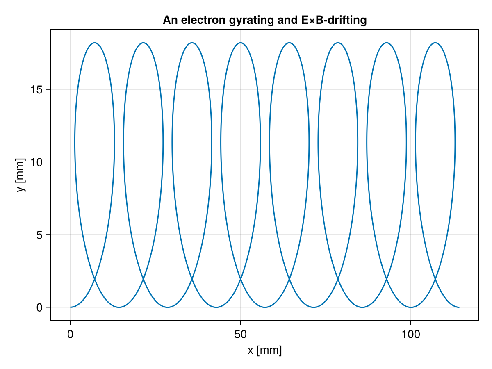
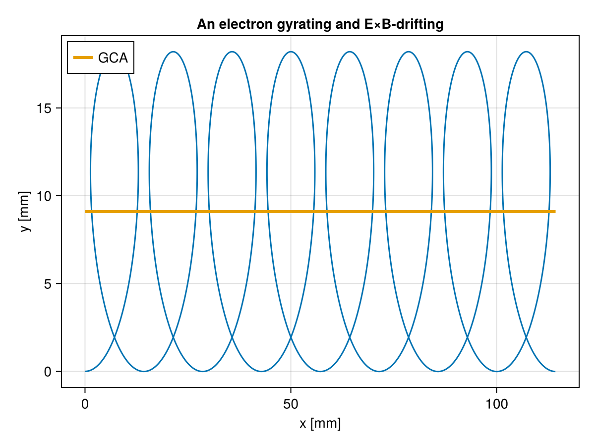
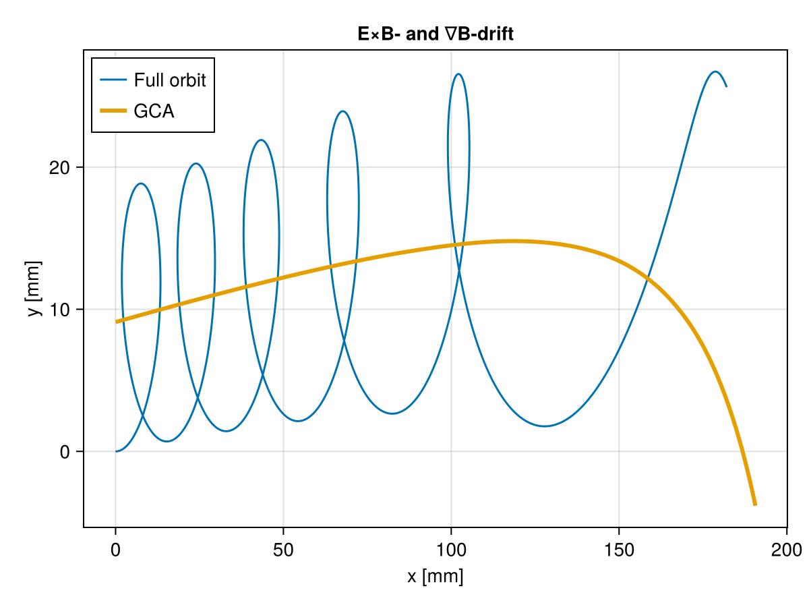
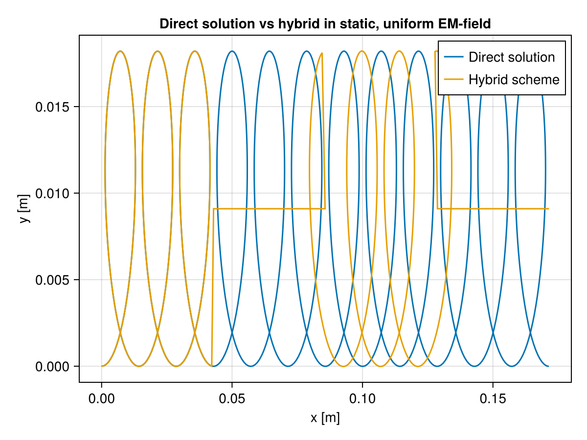
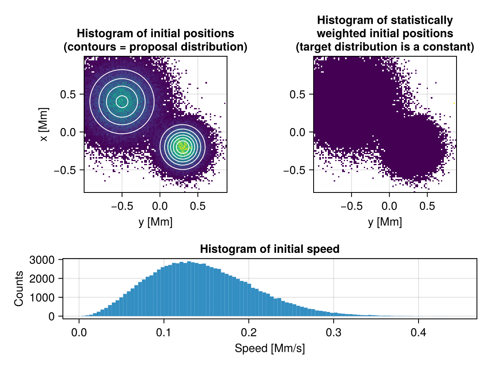

Examples
Using the equations of motion
The Lorentz force and the guiding centre approximation
This example demonstrates
- an electron's trajectory in a static, homogeneous electromagnetic field,
- an electron's trajectory in a static, homogenrous electric field with a magnetic gradient,
- solving the
lorentzforce!, - solving the
guidingcentreapproximation!, - using both analytical and gridded fields.
using TraceParticles: electron_mass, electron_charge
# The electromagnetic field should to be a callable with signature
# (x,y,z,t), returning two 3D vectors: (E, B).
B0 = 5e-4 # Tesla
E0 = 1e2 # V/m
emfield(x, y, z, t) = [0.0, E0, 0.0], [0.0, 0.0, B0]
charge = electron_charge # Coloumb
mass = electron_mass # kg
gyroperiod = 2π * mass / abs(charge * B0) # Seconds7.144773505756421e-8First, we solve the lorentz force directly:
using TraceParticles: lorentzforce!
using OrdinaryDiffEq: ODEProblem, solve
using CairoMakie
# The initial conditions is a 6D state vector: [x, y, z, vx, vy, vz]
u0 = [0.0, 0.0, 0.0, 1.0e6, 0.0, 0.0] # [m, m, m, m/s, m/s, m/s]
prob = ODEProblem(
lorentzforce!,
u0,
(0.0, 8gyroperiod), # Time span of simulation [seconds]
(; charge=charge, mass=mass, electromagneticfield=emfield),
)
sol = solve(prob)
# We can interpolate the dense solution to any tᵢ with sol(tᵢ)
t = range(0.0, 8gyroperiod, length=2000)
fig, ax, _ = lines(
1e3 .* [sol(tᵢ)[1] for tᵢ in t], # x-position in mm
1e3 .* [sol(tᵢ)[2] for tᵢ in t]; # y-position in mm
axis=(
xlabel="x [mm]",
ylabel="y [mm]",
title="An electron gyrating and E×B-drifting"
),
)
fig
Next, we solve the equations in the guiding centre approximation. get_guidingcentre converts the full-orbit state into the 4-component guiding centre state [Rx, Ry, Rz, v∥], and returns the magnetic moment:
using TraceParticles: guidingcentreapproximation!, get_guidingcentre
E, B = emfield(u0[1], u0[2], u0[3], 0.0)
R0, vparal0, μ = get_guidingcentre(
[u0[1], u0[2], u0[3]], # position
[u0[4], u0[5], u0[6]], # velocity
B, E, charge, mass,
)
prob_gca = ODEProblem(
guidingcentreapproximation!,
[R0..., vparal0],
(0.0, 8gyroperiod),
(;
charge=charge,
mass=mass,
electromagneticfield=emfield,
magneticmoment=μ
),
)
sol_gca = solve(prob_gca)
lines!(ax, 1e3 .* [sol_gca(tᵢ)[1] for tᵢ in t],
1e3 .* [sol_gca(tᵢ)[2] for tᵢ in t],
linewidth=3, label="GCA")
axislegend(ax, position=:lt)
fig
If the electromagnetic field is gridded, we can Interpolations.jl to create a callable with the required signature. We do this below in a modified electromagnetic field (adding a spatial, magnetic gradient).
using Interpolations
xaxis = 0:0.01:1
yaxis = 0:0.01:1
# Gridded components
ey = [E0 for x in xaxis, y in yaxis]
# Add a strong gradient to the magnetic field
bz = [B0*(1 - 4.2*x) for x in xaxis, y in yaxis]
bz_itp = linear_interpolation((xaxis, yaxis), bz, extrapolation_bc=Flat())
ey_itp = linear_interpolation((xaxis, yaxis), ey, extrapolation_bc=Flat())
emfield(x, y, _, _) = [0, ey_itp(x, y), 0], [0, 0, bz_itp(x, y)]
sol = solve(prob; reltol=1e-8)
sol_gca = solve(prob_gca)
fig, ax, _ = lines(
1e3 .* [sol(tᵢ)[1] for tᵢ in t],
1e3 .* [sol(tᵢ)[2] for tᵢ in t];
axis=( #
xlabel="x [mm]",
ylabel="y [mm]",
title="E×B- and ∇B-drift"
), label="Full orbit"
lines!(ax, 1e3 .* [sol_gca(tᵢ)[1] for tᵢ in t],
1e3 .* [sol_gca(tᵢ)[2] for tᵢ in t],
# (...)
fig
We can see that the $\nabla B = -4.2B_0x$ adds a small gradient-drift in the positive $y$-direction. In addition, as $x$ increases due to the $\mathbf{E}\times\mathbf{B}$-drift, the magnetic field strengt approaches zero, increasing the Larmor radius. Eventually, the Larmor radius becomes comparable to $|\nabla B/\mathbf{B}|$, causing the magnetic field to change significantly during the gyration. At this point the guiding centre drifts fails to approximate the full orbit. In the Speiser-orbit verification, we demonstrate how the hybrid-equations-scheme (hybridgcafo!) handles such scenarios by switching from the guiding centre equations to a direct solution whenever necessary. The Speiser-orbit simulation also shows how a proton behaves when it enters a current sheet.
Using the hybrid equations scheme
The hybrid equations hybridgcafo! combine solving the lorentzforce! and the guidingcentreapproximation!. This is useful when trajectories traverse regimes where a direct solution of the Lorentz force is impractical, and through regimes where the guiding centre approximation breaks down. For example, a particle approaching a current sheet might we strongly magnetised far away from the sheet, but is demagnetised inside the sheet (see the Speiser-orbit verification. The hybridgcafo! function expects the parameter p.eomid::EoMID.T, that indicates which set of equations to solve, either EoMID.FullOrbit or EoMID.GuidingCentreApproximation. The function hybridswitchaffect! is used to mutate this parameter, as well as to transform a lorentzforce! state into a guidingcentreapproximation!, and vica versa. When switching to the lorentzforce!-equations, the gyration phase is freely determined. hybridswitchaffect! uses (and expects) the particle parameter p.getphase with call signature (integrator). The functor HybridSwitchCondition determines whether the guiding-centre approximation is applicable or not, and together they work as a DifferentialEquations.jl callback pair, demonstrated in the Speiser-orbit verification. Here, we test hybridgcafo! and hybridswitchaffect! with preset switching times in a static, homogeneous field.
using TraceParticles
using OrdinaryDiffEq: ODEProblem, solve
using DiffEqCallbacks: PresetTimeCallback
using CairoMakie
# The electromagnetic field should be a callable with signature
# (x,y,z,t), returning two 3D vectors: (E, B).
B0 = 5e-4 # Tesla
E0 = 1e2 # V/m
emfield(x, y, z, t) = [0.0, E0, 0.0], [0.0, 0.0, B0]
charge = electron_charge # Coloumb
mass = electron_mass # kg
gyroperiod = 2π * mass / abs(charge * B0) # Seconds
vperp0 = 1.0e6
u0 = [0.0, 0.0, 0.0, vperp0, 0.0, 0.0] # [m, m, m, m/s, m/s, m/s]
tspan = (0.0, 12gyroperiod)
switchtimes = [3gyroperiod, 6gyroperiod, 9gyroperiod]
# The hybrid particle's parameters must be mutable. We could also use
# TraceParticles.HybridParams
mutable struct Hparams
charge
mass
electromagneticfield
magneticmoment
eomid
nswitches
getphase
end
sol_hyb = solve(
ODEProblem(
hybridgcafo!,
copy(u0),
tspan,
Hparams(
charge,
mass,
emfield,
nothing,
EoMID.FullOrbit,
0,
integrator -> π / 2,
)
);
callback=PresetTimeCallback(switchtimes, hybridswitchaffect!))
# We solve the Lorentz force for the whole time-span in addition for comparison
sol_ref = solve(
ODEProblem(
lorentzforce!,
copy(u0),
tspan,
(; charge=charge, mass=mass, electromagneticfield=emfield)
)
)
t = range(tspan..., length=1000)
fig, ax, l1 = lines(
[sol_ref(t_i)[1] for t_i in t],
[sol_ref(t_i)[2] for t_i in t];
label="Direct solution"
)
lines!(ax,
[sol_hyb(t_i)[1] for t_i in t],
[sol_hyb(t_i)[2] for t_i in t];
label="Hybrid scheme"
)
ax.title = "Direct solution vs hybrid in static, uniform EM-field"
ax.xlabel = "x [m]"
ax.ylabel = "y [m]"
axislegend(ax, position=:rt)
fig
Using callbacks
TraceParticles.jl provides a set of conditions and affects that can be used with DiscreteCallbacks to handle events along the particle trajectory. The following code creates a callback that terminates the particle when specified state variables are outside a specific domain.
# This condition triggers when the particle's x or z position is outside (0,1)
condition = OutOfBoundsCondition(( (0,1, (0,1) ), [1,3])
callback = DiscreteCallback(condition, terminate!;
save_positions=(false, true)
)The custom callback-affect outofboundsaffect! will set the particle parameter p.terminationcode to TraceParticles.TerinationCode.OutOfBounds, making it easier to diagnose why the particle was terminated. Defining a callback with a callback specification automatically matches useful condition-affect pairs. The specifier OutOfBounds matches OutOfBoundsCondition with outofboundsaffect!. Below, we run the same guiding centre particle as above with a OutOfBounds-callback. Instead of a NamedTuple we use the mutable struct GCAParams as a parameter container, because it is mutable and contains a field called terminationcode.
using TraceParticles: OutOfBounds, create_callback, GCAParams
using Printf
callback = create_callback(OutOfBounds(; x=(-0.05, 0.05)), nothing)
prob_gca = ODEProblem(
guidingcentreapproximation!,
[R0..., vparal0],
(0.0, 8gyroperiod),
GCAParams(
charge=charge,
mass=mass,
electromagneticfield=emfield,
magneticmoment=μ
),
)
sol = solve(prob_gca; callback=callback)
@printf("""
retcode = %s\nterminationcode = %s
stopped at t = %.2E
x at stop = %.4f
""", sol.retcode, sol.prob.p.terminationcode, last(sol.t), sol.u[end][1]
)retcode = Terminated
terminationcode = OutOfBounds
stopped at t = 3.30E-07
x at stop = 0.0792Using statistical sampling of initial conditions
Say you want to trace a large ensemble of particles, and that those particles should be a representative sample of a fluid. Then their initial volocities should be Maxwell-Boltzmann distributed and their initial positions should reflect the particle density of the fluid. TraceParticles.jl provides samplers and custom prob_funcs (to be passed as a keyword argument to an EnsembleProblem) to achieve this. In this example we use the MHDSampler to draw positions using importance sampling, and velocities from a Maxwellian distribution with the temperature of the drawn position. In importance sampling, we draw samples from a proposal probability distribution function, but give the draws a statistical weight so that the target distribution can be recreated. Here, the target distribution is a uniform particle number density, and the proposal distribution is a bias towards two specific modes.
using TraceParticles:
proton_mass,
proton_charge,
MHDSampler,
lorentzforce!,
FullOrbitParams,
SampleFullOrbit,
binmap
using OrdinaryDiffEq: ODEProblem
using SciMLBase: EnsembleProblem, solve
using LinearAlgebra: norm
using CairoMakie
emfield(x, y, z, t) = [0.0, 1e2, 0.0], [0.0, 0.0, 5e-4] # V/m, Tesla
temperature(x, y, z, t) = 1e6 # Kelvin
mass = proton_mass # kg
charge = proton_charge # Coloumb
# Define the domain of the initial positions and time
xmin, xmax = -1e6, 1e6 # meters
ymin, ymax = -1e6, 1e6 # meters
zmin, zmax = -1e6, 1e6 # meters
tmin, tmax = 0.0, 1e-4 # seconds
# A target probability density distribution that is uniform in spacetime
# This function represent the particle number density of the fluid
target_distribution(x, y, z, t) =
1 / prod([xmax - xmin, ymax - ymin, zmax - zmin, tmax - tmin])
# A proposal probability density distribution that favours values in two
# Gaussian modes in the xy-plane
proposal_distribution(x_, y_, z, t; x=x_/1e6, y=y_/1e6) =
exp(-((x - 0.3)^2 + (y + 0.2)^2) / (2 * 0.15^2)) +
0.6exp(-((x + 0.5)^2 + (y - 0.4)^2) / (2 * 0.25^2))
maxvalue = 1.05 # must be ≥ max(proposal) over the domain
sampler = MHDSampler(
target_distribution,
proposal_distribution,
temperature,
xmin, xmax, ymin, ymax, zmin, zmax, tmin, tmax,
maxvalue,
Float64
)
prob = ODEProblem(
lorentzforce!,
zeros(6), # [x, y, z, vx, vy, vz]. Nonzero values are given by the prob_func
(tmin, tmax),
# A custom struct is needed to store statistical weight.
FullOrbitParams(
charge = charge,
mass = mass,
electromagneticfield = emfield
)
)
ensemble_prob = EnsembleProblem(prob;
prob_func = SampleFullOrbit(sampler, tmax),
)
sim = solve(ensemble_prob; trajectories = 100_000)
x0 = [u.u[1][1] for u in sim.u] ./ 1e6 # Convert meters to megameters
y0 = [u.u[1][2] for u in sim.u] ./ 1e6
w = [u.prob.p.weight for u in sim.u] # the stastical weights
v0 = [norm(u.u[1][4:6]) for u in sim.u]
fig = Figure();
ax = Axis(fig[1:2,1])
edges, counts = binmap(x0, y0)
heatmap!(ax, edges[1], edges[2], counts)
contour!(edges[1], edges[2], (x, y) -> proposal_distribution(1e6x, 1e6y,0,0);
color=:white, levels=6
)
ax.ylabel = "x [Mm]"
ax.xlabel = "y [Mm]"
ax.title =
"""Histogram of initial positions
(contours = proposal distribution)"""
ax.aspect = DataAspect()
ax = Axis(fig[1:2,2])
edges, counts = binmap(x0, y0; weights=w)
heatmap!(ax, edges[1], edges[2], counts)
ax.xlabel = "y [Mm]"
ax.title =
"""Histogram of statistically
weighted initial positions
(target distribution is a constant)"""
ax.aspect = DataAspect()
ax = Axis(fig[3, 1:2])
hist!(ax, v0 ./ 1e6; bins=100)
ax.xlabel = "Speed [Mm/s]"
ax.ylabel = "Counts"
ax.title = "Histogram of initial speed"
fig
Efficient storage of particle ensembles
The data-footprint of the dense solutions to large particle ensembles can be a problem. Common solver options like saveat and save_everystep helps to reduce memory use during integration, but the use of output_funcs and reductions are most efficient to reduce data storage needs. TraceParticles.jl provides the reduction SaveBatchAsHDF5 which stores the data from each particle batch in a HDF5 group. For the SaveBatchAsHDF5 reduction to work, the SciML.EnsembleProblem's output_func needs to return an object that can be turnet into a data frame via DataFrame(batch), e.g. a NamedTuple, or TraceParticles.jl's output functions. These output functions discard all but the initial and final state of the particle, and those specialised towards the parameter containers FullOrbitParams, GCAParams, and HybridParams stores relevant particle parameters in addition. TraceParticles.jl also provides functions for loading the data from the HDF5-files that SaveBatchAsHDF5 creates, like h5_getdataset and h5_getall.
using TraceParticles
using OrdinaryDiffEq: ODEProblem, remake
using SciMLBase: EnsembleProblem, solve
using Random: Xoshiro
outdir = mktempdir()
expname = "demo"
mkpath(joinpath(outdir, expname))
mass = electron_mass # kg
charge = electron_charge # C
B = 1e-3 # T
E = 1e2 # V/m
T_c = 2π * mass / abs(charge * B) # s
temperature = 1e6 # K
uniformfield(x, y, z, t) = [0.0, E, 0.0], [0.0, 0.0, B]
x0 = 0.5
y0 = 0.5
z0 = 0.5
t0 = 0.0
rng = Xoshiro(0)
vx0 = TraceParticles.maxwellianvelocitysample(rng, Float64, temperature, mass)
vy0 = TraceParticles.maxwellianvelocitysample(rng, Float64, temperature, mass)
vz0 = TraceParticles.maxwellianvelocitysample(rng, Float64, temperature, mass)
E0, B0 = uniformfield(x0, y0, z0, t0)
R0, vparal0, μ = get_guidingcentre(
[x0, y0, z0],
[vx0, vy0, vz0],
B0, E0, charge, mass
)
u0 = [R0..., vparal0]
tspan = (0.0, 20_000T_c)
npart = 5_000
reduction = SaveBatchAsHDF5(
expdir=outdir,
expname=expname,
batchsize = npart,
nbatches=1,
verbose=true,
)
baseprob = ODEProblem(
guidingcentreapproximation!,
u0,
tspan,
GCAParams(
charge=charge,
mass=mass,
electromagneticfield=uniformfield,
magneticmoment=μ
),
)
eprob = EnsembleProblem(baseprob;
output_func=output_func_lightweight_gca,
prob_func = (prob, ctx) -> remake(prob;
u0 = [R0..., vparal0*randn(rng)],
p = GCAParams(
charge=prob.p.charge,
mass=prob.p.mass,
electromagneticfield=prob.p.electromagneticfield,
magneticmoment=prob.p.magneticmoment*rand(rng)
),
),
reduction=reduction
)
sim = solve(eprob;
trajectories=npart,
)
filename = get_filename(reduction)
h5_getdataset(filename, [:xf, :yf, :zf, :vparalf, :magneticmoment])[1:10, :]| Row | xf | yf | zf | vparalf | magneticmoment |
|---|---|---|---|---|---|
| Float64 | Float64 | Float64 | Float64 | Float64 | |
| 1 | 71.9448 | 0.520304 | 526.094 | 7.35635e5 | 3.92487e-15 |
| 2 | 71.9448 | 0.520304 | 1323.24 | 1.85134e6 | 6.48905e-16 |
| 3 | 71.9448 | 0.520304 | -4612.1 | -6.4559e6 | 1.71745e-15 |
| 4 | 71.9448 | 0.520304 | -341.379 | -4.78503e5 | 3.19536e-15 |
| 5 | 71.9448 | 0.520304 | -8742.5 | -1.22369e7 | 1.53336e-15 |
| 6 | 71.9448 | 0.520304 | -2033.26 | -2.84651e6 | 2.51968e-15 |
| 7 | 71.9448 | 0.520304 | 7739.36 | 1.08315e7 | 4.41764e-15 |
| 8 | 71.9448 | 0.520304 | 1239.88 | 1.73466e6 | 3.41397e-15 |
| 9 | 71.9448 | 0.520304 | -1820.5 | -2.54872e6 | 9.9213e-17 |
| 10 | 71.9448 | 0.520304 | -5136.84 | -7.19034e6 | 3.77101e-15 |